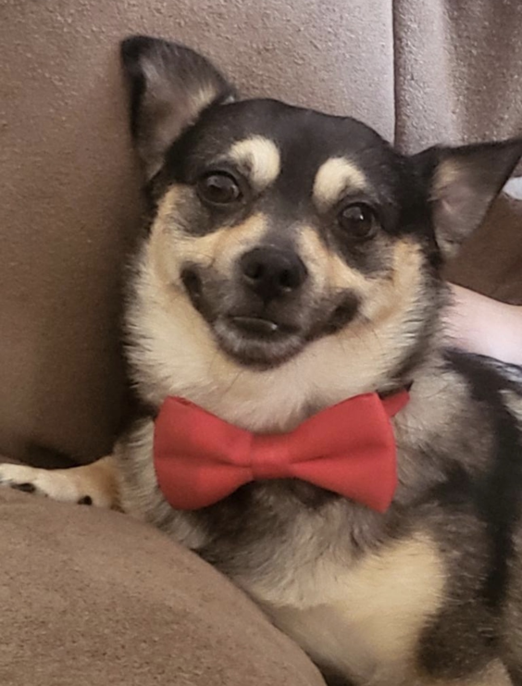
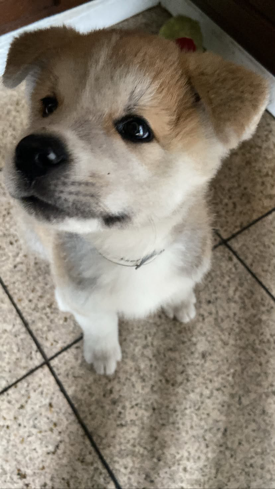
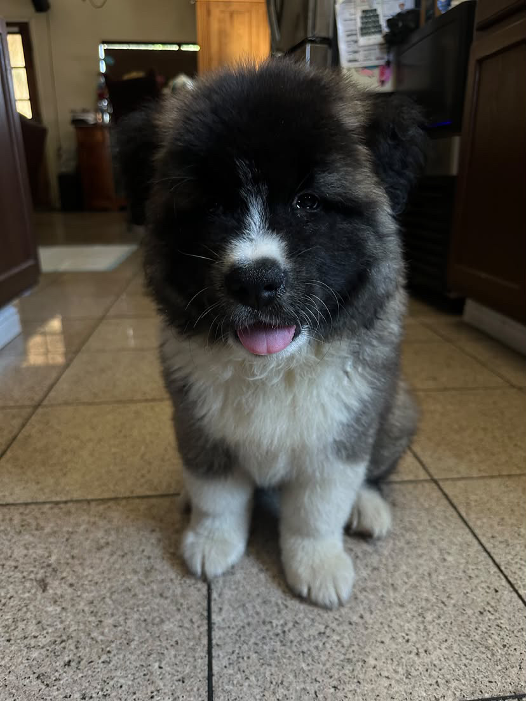
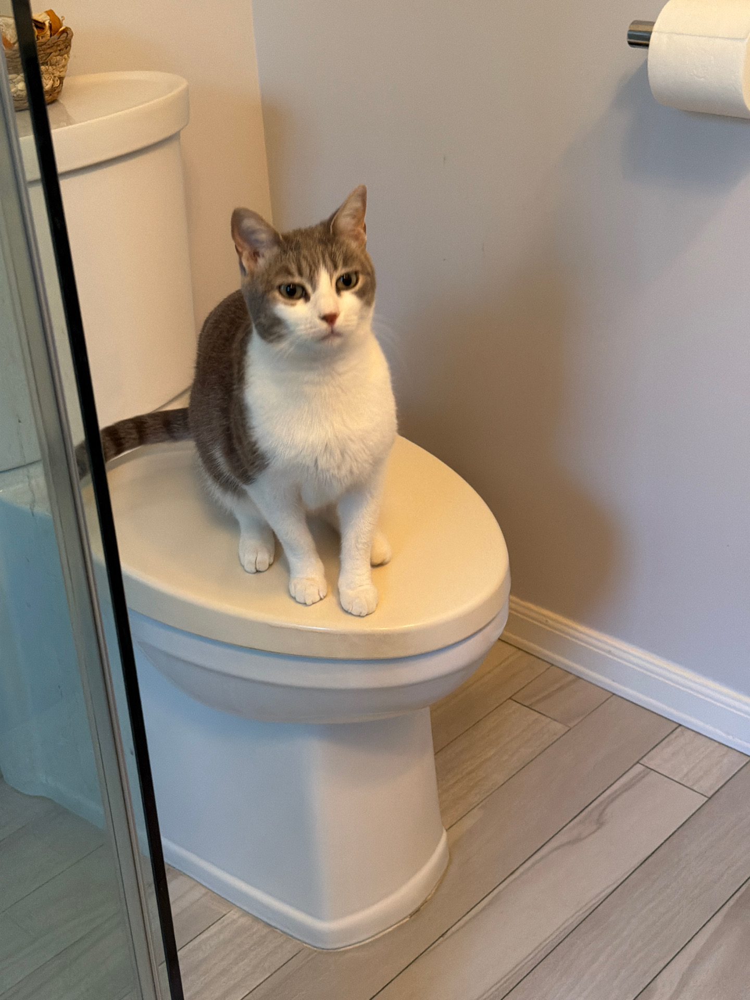

Bear is a black and brown eight-year-old dog. His owners got him when he was only a few months old as a Christmas gift to their daughter. He is a very spoiled dog. He loves eating food, especially treats. However, he doesn't play with any toys and only enjoys running around or playful biting. He can be very lazy sometimes, as he also loves to sleep and lounge around. He is an absolute sweetheart and loves meeting new people, but he does get annoyed if you mess with him for too long. His breed is actually unknown.

Canelo is a beige and white three-year-old American Akita mixed with Japanese Akita. His owners got him when he was only a few months old on October 15, 2023. He is a really lazy dog and loves to sleep. He isn't very energetic, and he does seem to be more shy around other people. But he isn't aggressive toward anybody.

Theo is a black and white seven-month-old American Akita. His owners got him not too long ago on May 17, 2026, the same ones who own Canelo. He is very crazy when it comes to food. He can be quite a jealous dog, and wants all the attention on himself. He is always playful, too.

Nyla is a white and gray American Shorthair who is turning three years old this year. Her owners got her on November 14, 2024. She cries a lot when you don't play with her, and she is very spoiled with toys and food. She can leave a few small scratches sometimes, but she isn't an aggressive cat at all.